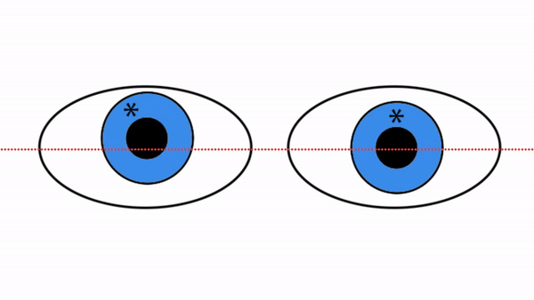
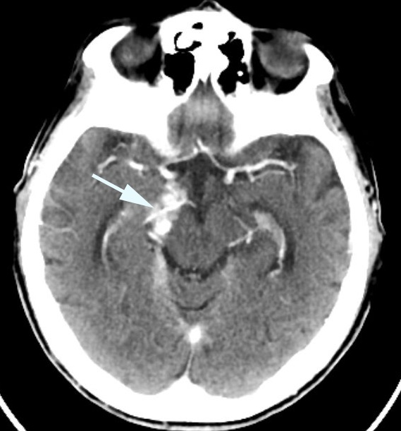
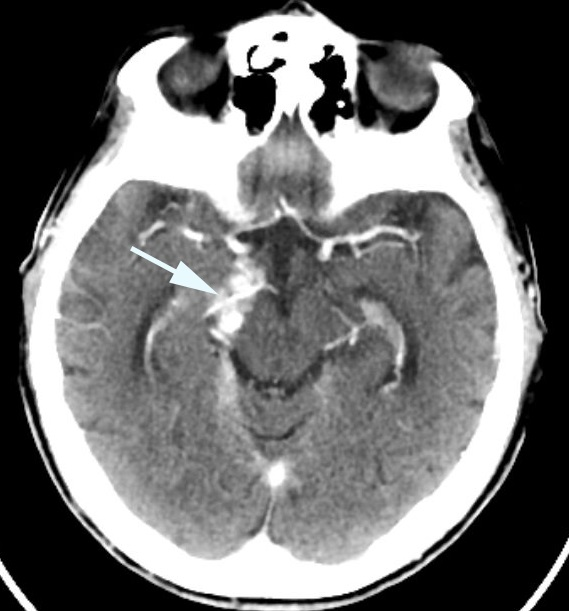

Isolated Fourth Nerve Palsy
- Unilateral lesion of the fourth nerve without other pertinent abnormalities (“isolated”)
- Lesion is usually located in the extra-axial portion of the fourth nerve
- Common causes: decompensated congenital superior oblique muscle dysfunction, ischemia, head trauma, neurosurgery
- Uncommon causes: intracranial inflammation, tumor
-
Core clinical features
- Blurred vision, diplopia, tilted image seen by one eye
- Eye movements appear normal in amplitude
- Vertical misalignment increases with gaze opposite to the side of the palsy and with head tilt to the same side (“positive three-step test”) and the Double Maddox Rod test reveals excyclodeviation Double Madox Rod
-
Tip: if the Double Maddox Rod test reveals more than 10 degrees of cyclodeviation, the fourth nerve palsies are bilateral
-
Tip: if the vertical misalignment (hypertropia) is greater in downgaze than in upgaze, the palsy is acquired Acquired fourth nerve palsy
-
Tip: if the vertical misalignment is equal in downgaze and upgaze or greatest in upgaze, the condition is a decompensated superior oblique muscle weakness Decomp SOM second version Blue Eyes Decomp SOP revised from Video ocular Motor Cranial Nerve Pathways
-
Tip: the fourth nerves are often damaged by head trauma at their dorsal exit in the anterior medullary velum as the moving brain strikes the knife-like tentorial edge Bilateral 4th nerve trauma
-
Tip: fourth nerve palsies are common after neurosurgical procedures in the region of the tentorium cerebelli
 -
Imaging features
- Ischemic fourth nerve palsies will not be display intracranial imaging abnormalities, but after traumatic fourth nerve palsy and decompensated superior oblique muscle weakness, a small-caliber superior oblique muscle is often evident on orbital imaging
- • When fourth nerve palsy arises from tectal lesions, caudal quadrigeminal plate lesions can be evident, but may be small
- Post-traumatic intra-axial dorsal midbrain hemorrhages are often visible
- Tentorial meningiomas will usually be visible
- Fourth nerve inflammations and schwannomas may be visible only on high-definition imaging

 

- Skew deviation, but that condition does not show torsional misalignment on the Double Maddox Rod test, excyclodeviation of the higher eye, increased vertical fusional amplitude, and does not obey the three-step test
- Graves diesease
- Orbital myositis, tumor, trauma
- Myasthenia gravis
- Third cranial nerve palsy
-
Trap: do not dismiss this diagnosis if eye movements appear to be of normal amplitude
- Look for a positive three-step test and torsional misalignment on the Double Maddox Rod Test with excyclodeviation in the higher eye
-
Tip: if you find an increased (>4 prism-diopters) vertical vergence amplitude or misalignment greater in upgaze than downgaze, diagnose decompensated congenital superior oblique muscle dysfunction or chronic orbital inflammation limiting contralateral supraductionand and do not consider an intracranial cause
-
Tip: myasthenia gravis and orbital restrictive conditions are excellent imitators of fourth nerve palsy
- You can safely attribute fourth palsy to a preceding neurosurgical procedure if it was near the tentorium cerebelli
- Beware of attributing fourth nerve palsy to preceding head trauma if the patient did not lose consciousness
- Perform brain MRI in children at the onset of the palsy unless there was preceding severe head trauma
-
Defer brain MRI in adults if they
- Fulfill an arteriosclerotic risk profile, in which case palsy is likely to be caused by ischemia and expected to resolve spontaneously within 3 months
- Have features of a decompensated congenital superior oblique muscle, which will persist or worsen but does not require imaging at any time
- Perform brain MRI in all adults whose palsy does not resolve within 3 months and who do not fulfill criteria for a decompensated congenital superior oblique palsy
- Ischemic palsies should resolve completely within 3 months
- Non-ischemic palsies may not resolve
- Surgical realignment of the eyes in patients with persistent diplopia usually provides a satisfactory zone of single binocular vision, although more than one procedure may be required
-
Trap: although often effective in eliminating primary gaze diplopia, surgical recession of the contralateral inferior rectus muscle may cause intractable diplopia in the reading position
- Try this flowchart approach Flowchart Approach To Evaluating Fourth Nerve Palsy